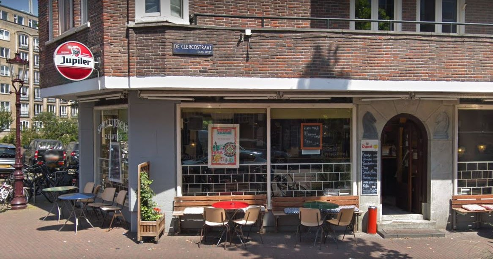
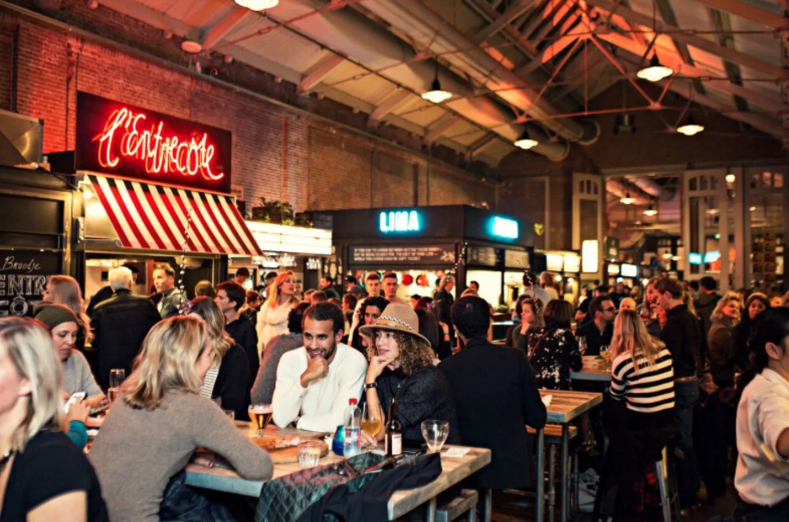
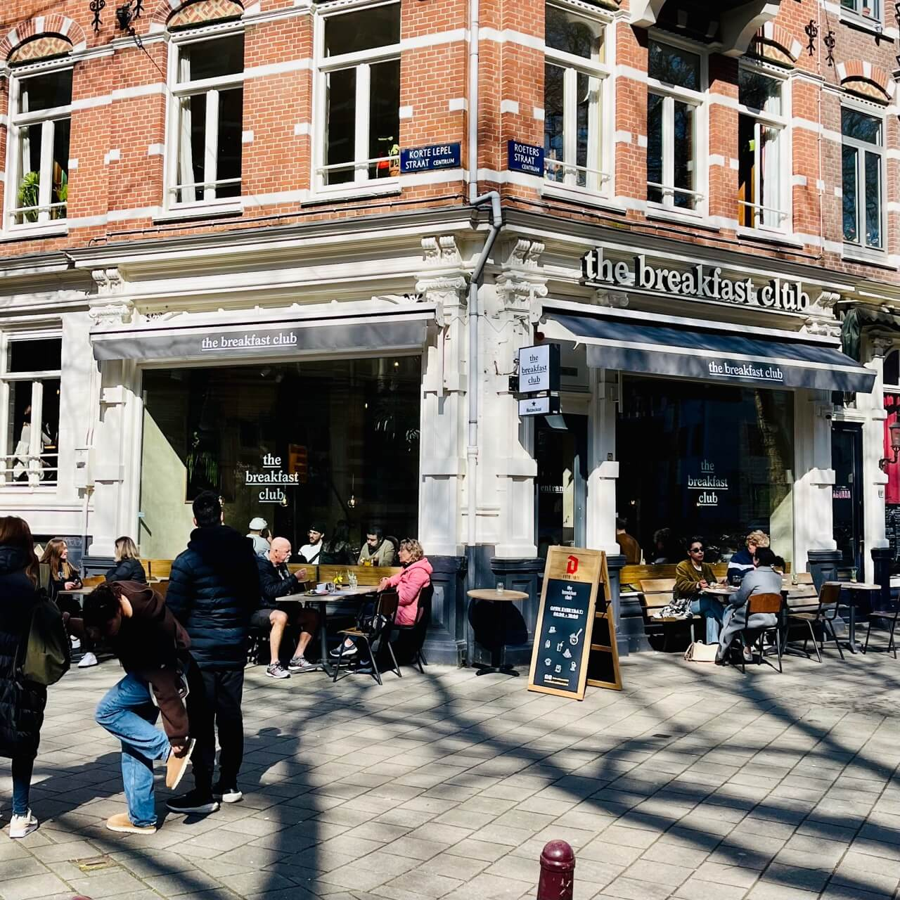

Restaurants & Cafés
Spelletjescafé 2 Klaveren
Spelletjescafé 2 Klaveren is a Boardgame café where you can go and have a coffee,
a beer and a good time beating your friends in Monopoly. You have the freedom to choose
one of they many in-house boardgames or even bring your own. During the day they mainly
attract an older crowd, but when the sun sets a lot of young people come to the brown café
to drink and play some games. They also organize special tournaments in games like Magic
the gathering and backgammon, where you can win some prize money or some well-deserved honor.

Best :
Boardgames, tournaments & a mix of an old and young crowd
Info :
- Price Range: $
- Busy: Not really
- Crouwd: Young & Old
Foodhallen
Foodhallen is an old tram remise turned into a venue for all kinds of different food stalls.
Among the 20 stalls you find, Meatball rollers with…you guessed it, meatballs. The Butcher with
deliciously juicy burgers, Shirkhan with Mumbai street food, Petit Gâteau with French pastries and
many more! My personal favorite is the homemade white bean falafel & spicy potato wedges at Píta and
anything from the Dim Sum Thing stand. So go and be overwhelmed by the amount of choices and enjoy
the open feeling of the food court.

Best :
Lots of good food choices in one space
Info :
- Price Range: $$
- Busy: very
- Crouwd: slightly touristy
The Breakfast Club
The Breakfast Club is a breakfast, brunch and lunch place with multiple branches in Amsterdam.
With their doable prices and good food, it's my go to date spot. They have the best American style
pancakes (way way better the Moak) and I love their breakfast burger too! Some of their places are often
really
busy, others are not, but they all share a nice pastel interior with a lot of school like touches.

Best :
Pancakes and good brunch
Info :
- Price Range: $
- Busy: Quite busy
- Crouwd: Millenials
SOJU Bar
Soju Bar is an great place to indulge in Korean drinks and dishes.
This bar is renowned for is wide selection of Soju, a Popular Korean alcoholic beverage
that comes in may flavors. They also serve great dishes like bibimbap, kimbap and my personal
favorite, their crispy Korean fried chicken! Don't forget to order some sides as well, like kimchi
, mandu and rice. It's quite busy during the evening so make sure to reserve a table in advance
so you won't have to wait outside.

Best :
Soy Garlic Fried Chicken
Info :
- Price Range: $
- Busy: very
- Crouwd: young